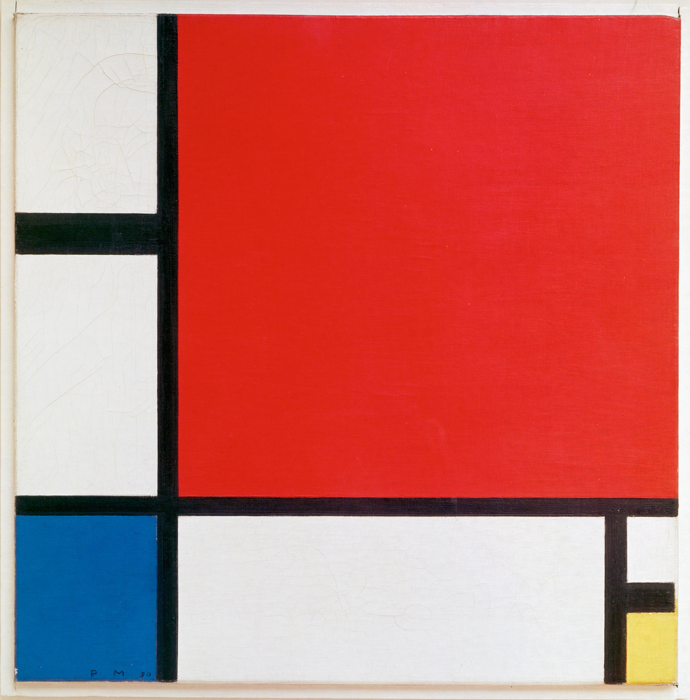

Three primary colors, a few black lines, and large fields of white. No sky, no figure, no story — Mondrian pared painting down until only balance remained. And yet it out-lasts almost everything busier: the large red top-right lands like a quiet accented beat, counterweighted by blue at the lower left, a chip of yellow at the lower right, and black lines of deliberately unequal weight. It is one of the most influential images of the 20th century — countless logos, layouts, posters, and garments still run on its grammar.
It looks simple, but it's a precision weighing act. The red in the upper right fills nearly half the canvas — the heaviest weight in the picture. Mondrian doesn't answer it with symmetry. He counterweights it with a grounded blue in the lower-left corner, a small chip of yellow lower right, and black lines of unequal thickness and spacing. This is dynamic equilibrium: unequal weights pulling against each other into stillness.
The lines aren't a grid. Look closely — they vary in weight and every interval differs. The vertical sits left of center, splitting the field into a "narrow / wide" pair so it can breathe; a horizontal under the red carves off a band of white on the right. It's precisely this un-evenness that keeps it alive rather than a dead checkerboard.
White is not background. The white blocks carry equal weight to the colored ones — "color without color" — holding the whole thing from collapsing. The three colors scatter along a diagonal (red top-right, blue bottom-left, yellow bottom-right), leaving broad white so the red rings louder. Inside the upper-left white square, a faint pencil-sketched circle still ghosts — a rare trace of the hand in an otherwise rational surface.
Mondrian restricted himself to red, yellow, blue + black, white, gray — the most fundamental set in color theory. Primaries can't be mixed from anything else; they're the root of every other color. On the wheel the three sit 120° apart: a triadic relationship, the most stable and most tense triangle you can build.
Area sets the mood. Red dominates yet never screams, because white fields and black borders fence it in; blue and yellow are small — a low note and a high note, struck once each. Black also purifies the color: the borders keep every block flat and saturated (no gradient, no brush-shadow). It's simultaneous contrast in reverse — the colors are kept from bleeding into each other, each sounding purely on its own.
There is, deliberately, no light and no shadow. No perspective, no modeling, no depth — Mondrian saw those as personal, emotional noise. He wasn't after the light of a passing moment but a universal, spiritual order: the meeting of horizontal and vertical, which for him was the most basic opposition-and-harmony of the cosmos.
But it's no print. Up close, the edges of the black lines carry a slight hand-made unevenness, and the color blocks show the matte texture of oil paint — you can even read the layered underpainting. That trace of imperfection is exactly what keeps a maximally rational picture warm, and still a painting.
Because it's the ultimate proof of less is more. Strip everything inessential and every remaining decision has to be right: why this line here, why this red this big, why this much white. It forces you to look at relationships rather than things — beauty turns out to be nothing more than the exact right measure between a few lines and a few blocks.
It also proves abstraction isn't coldness. This maximally restrained language is still, a century later, the mother-motif of endless design — from the Mondrian dress to Bauhaus posters, from app icons to web grids. A true classic is borrowed infinitely, yet still unmistakably itself.
Piet Mondrian (1872–1944), Dutch, the standard-bearer of Neoplasticism. He began with realist landscapes and trees, then step by step abstracted the tree into lines, and finally reduced even the lines to horizontals and verticals only. In 1917 he co-founded De Stijl with Theo van Doesburg and others, arguing that pure geometry and primary color could voice the universal harmony of the cosmos.
He lived alone and was fiercely disciplined — even his studio walls were painted in blocks of red, yellow, and blue. And he loved to dance, boogie-woogie above all; in his late New York years he let this strict language turn bright and syncopated, painting Broadway Boogie Woogie. A man who worshipped order almost religiously was, underneath, always moving to a beat.